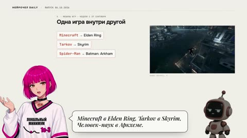
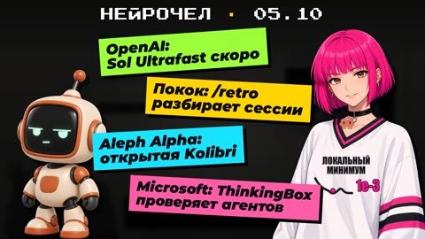
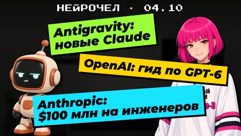
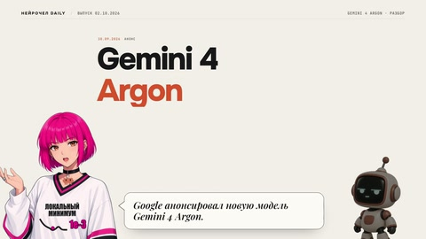
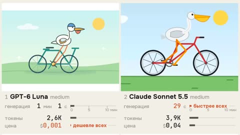
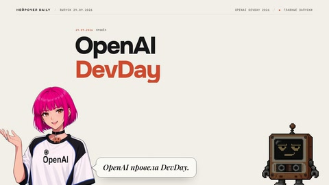
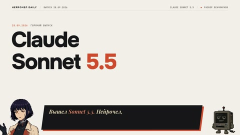
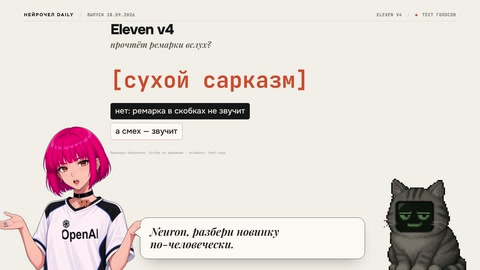
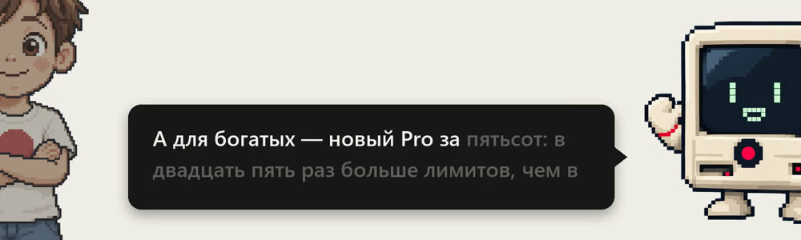

Агент отвечает на вопрос про инструмент или рынок за минуту, а через неделю ответ уже не найти: он остался в закрытом чате. Для таких вопросов есть отдел исследований, папка corp-research. Каждый вопрос оставляет в нём файл, и следующий вопрос сначала ищет там, потом в интернете.
Каждую неделю выходит что-то сильное и новое, поэтому исследование — первый шаг любой работы агента. Сначала агент берёт готовое из отдела исследований, а то, чего там нет, исследует. Так устроен агент новостных выпусков Нейрочела: новости он берёт из сборщика новостей отдела исследований, а там, где нужно глубже, запускается исследование.
Последние выпуски, 28 сентября – 6 октября 2026Нейрочел Дейли в Telegram
| Новость | Что вышло | Выпуск |
|---|---|---|
| с 27.09 | Агенты на Claude Opus 5.5 разбирают игры и склеивают их: Minecraft в Elden Ring, скейт в MW2, открытый Universal Modder | 06.10 |
| 04.10 | Ultrafast для GPT-6.1 Sol снова «скоро», /retro Мэтта Покока, открытая Kolibri от Aleph Alpha, тест ThinkingBox от Microsoft | 05.10 |
| 02.10 | Claude Frontier Academy, Opus 5.5 и Sonnet 5.5 в Antigravity, гид OpenAI по моделям GPT-6 | 04.10 |
| 01.10 | Mods в Claude Code, баны Claude за вход через VPN, сброс лимитов Codex, FLUX 3 Image | 03.10 |
| 01.10 | Microsoft MAI-Transcribe-2 и MAI-Voice-2.1 | только отчёт |
| 30.09 | Gemini 4 Argon | 02.10 |
| 29.09 | Свой тест: шесть моделей OpenAI и Anthropic рисуют пеликана на велосипеде | 30.09 |
| 29.09 | OpenAI DevDay: GPT-6.1 Sol, Codex в облаке, Decisions API | 30.09 |
| 28.09 | Claude Sonnet 5.5 | 28.09 |
| 28.09 | ElevenLabs v4 | 28.09 |

Мешапы игр · выпуск 06.10
Sol Ultrafast и ещё три · выпуск 05.10
Frontier Academy и ещё две · выпуск 04.10 Mods в Claude Code и ещё три · выпуск 03.10
Gemini 4 Argon · выпуск 02.10
Тест пеликанов · выпуск 30.09
OpenAI DevDay · выпуск 30.09
Claude Sonnet 5.5 · выпуск 28.09
ElevenLabs v4 · выпуск 28.09За девять дней вышло девять выпусков: шесть про одну тему и три дайджеста по три-четыре новости. Из новинок этих дней только MAI-Transcribe-2 и MAI-Voice-2.1 остались отчётом.
Такой файл называется отчётом: ответ на один вопрос, источники и дата сбора. На 6 октября 2026 года отчётов в отделе 751.
Сквозной пример статьи: настоящий отчёт про инструменты вайбкодеров.
Сначала что бывает с ответами агента без отдела.
Три вопроса, которые задают агенту владельцы и руководители.
Пример: так эти вопросы могли бы набрать агенту, и так он отвечает без отдела
как типографии нашего размера, человек 20, внедряют ИИ в работу команды? что у них реально сработало?
АгентОбычно начинают с автоматизации рутины: заявки, документооборот, ответы клиентам. Важно начать с пилота и обучить сотрудников.
ссылок нет · дат нет
разбери ГОСТы на нашу продукцию: какие требования к нам применимы и как это проверять?
АгентКлючевые разделы стандарта: общие положения, требования к качеству, методы контроля. Рекомендую свериться с актуальной редакцией.
ссылок нет · дат нет
какие ИИ-инструменты уже используют небольшие кафе и сколько это стоит?
АгентКафе используют чат-ботов для бронирования, генерацию меню и ответов на отзывы, прогноз закупок. Стоимость зависит от сервиса.
ссылок нет · дат нет
Собственник типографии спрашивает, как компании его размера внедрили ИИ. Агент отвечает общими словами из своих знаний, а через месяц на тот же вопрос отвечает иначе. Что сработало у людей на этой неделе, он не знает.
Руководитель компании просит разобрать ГОСТы. Как другие компании собирают для этого рабочую обвязку, модель не знает. В X и на Reddit этого тоже не будет: ГОСТ — российская специфика, и опыт практиков лежит в русскоязычных источниках. Качество ответа здесь зависит от того, где искать.
Консультант для малого бизнеса спрашивает, какие ИИ-инструменты уже используют небольшие кафе и сколько это стоит. Ответ модели устарел на полгода, а свежий опыт есть только в сообществах.
Во всех трёх случаях агент отвечает уверенно, но какой ответ верный, понять нельзя: ни ссылок, ни дат. Найденное не копится, и каждый вопрос стоит как первый.
Отдел исследований хранит найденное на диске, в папке с тремя вещами: правилами для агента, каталогом и отчётами по месяцам. Новый чат в этой папке берёт контекст с диска, память прошлой сессии ему не нужна.
Главное правило отдела: в любой неясной ситуации агент сначала открывает каталог. Свежий отчёт отвечает на вопрос сам. Новый поиск идёт, когда ответа нет или он неполный, противоречивый либо устарел. Это тот же исследовательский цикл из статьи о research под решение, собранный в отдел на всю компанию.
Как это работает, видно по трём вопросам к отделу.
Вопросы пришли в сентябре и октябре 2026 года: про рекламу, про ролик и про внедрение агентов в небольшой компании.
Кейс 1Сколько брать за рекламу
проведи внешний рисеч плз по ценам и сколько я могу брать
Какую цену называть рекламодателям за пост в Telegram-канале, закреп в чате и интеграцию на YouTube.
Что сделал отделЦены в чате в рынке, YouTube продавался дёшево, слабое место в ответах на запросы.
| Интеграция в ролик или стрим | от 20 000 ₽ | 30 000 ₽ |
| Отдельный обучающий ролик | от 50 000 ₽ | от 75 000 ₽ |
| Пост в Telegram-канале | цены не было | 120 USD |
| Закреп в чате на 1, 3, 7 дней | 30, 60, 100 USD | без изменений |
Прайс и медиакит для рекламодателей приняли в тот же день. Прайс действует до 31 декабря 2026 года.
Кейс 2Чем чужая копия ролика лучше оригинала
там был чувак который скопировал мой ролик […] и он улучшил мою версию […] проведи рисеч как сейчас принято покадрово разбирать например ролики ля оценки. как мниумм из того что я заметил это лчше сделаны субтитры например
По какому порядку сравнить ролик Нейрочела с копией и что из копии взять себе, начиная с субтитров.
Что сделал отделКод режет ролик на планы и считает, модель смотрит только пары кадров, человек решает с телефона.

Через несколько часов в сборке роликов: до двух строк в горизонтальном ролике и трёх в вертикальном, проверка считает знаки в секунду.
Кейс 3Как компании на 10–50 человек внедряют агентов
Как небольшие компании на 10–50 человек (типография, агентство, небольшое производство) в 2026 году внедряют ИИ-агентов в работу команды? Собери опыт практиков за последние два месяца: что сработало, что нет. У каждого факта укажи источник.
С чего владельцу небольшой компании начать: что отдать агенту, что оставить людям.
Что сделал отделНачинают с одной скучной задачи, которую легко проверить, а необратимое подтверждает человек.
Решения по отчёту ещё нет: он ждёт владельца, который будет внедрять.
В каждом кейсе отдел сначала открывал каталог и только потом искал в интернете. Это два разных исследования.
Исследование делится на два процесса.
Внешнее исследование приносит то, чего в вашей системе ещё нет. Агент или сервис идёт в интернет: в документацию, в X, на Reddit, в deep research. Урок 3 про внешнее исследование.
Оно нужно, чтобы увидеть чужой опыт. Всё меняется быстро, а знания модели устаревают с даты её обучения. Что вышло на этой неделе и как этим уже пользуются люди, модель из головы не знает.
Сильнее всего внешнее исследование работает, когда свои процессы уже описаны: правила отделов, пайплайны, сервер. Тогда найденное за неделю сразу пробуется на своём процессе, а удачная проба становится новым шагом, который дальше работает фоном.
Пример: пайплайн пересборки вертикальных рилсов. На входе ссылка на чужой рилс, агент разбирает его по сценам, собирает голос и графику и выдаёт свой ролик. Рабочий пайплайн собрали примерно за четыре часа: студия видео и сервер уже были описаны.
Для внешнего поиска нужны два слова. Источники отвечают на вопрос «где ищем»: веб, X, Reddit, архив Telegram. Инструменты отвечают на вопрос «чем ищем»: Grok, deep research в ChatGPT, браузер агента.
Лучшие источники базовые: лаборатории и авторы, которые сами создают контент. Указывайте оригинал: в пересказе обычно теряется суть и добавляется что-то от автора пересказа.
Инструменты различаются по скорости. Агент, запущенный локально, за то же время делает два-три поисковых запроса, а агент внутри веб-версии ChatGPT успевает прочитать сотни сайтов. Поиск дорог по времени и вниманию, а найденного много. Поэтому результаты копятся в своей копилке знаний: один раз найденное не ищется заново.
Внутреннее исследование ищет в том, что у вас уже есть: в прошлых отчётах, своих файлах, архиве переписок. В corp-research это каталог отдела и архив Telegram.
Отдел нужен обоим процессам. Он хранит результаты внешнего поиска, и из него берут другие отделы: контент, уроки, ответы клиентам. Вызвать отдел можно из его папки или фразой в любом другом отделе, её подхватит скилл.
Самый доступный инструмент внешнего исследования уже встроен в ChatGPT, Claude и Gemini: это deep research.
Deep research — режим внутри ChatGPT, Claude и Gemini, в котором модель работает как агент: разбивает вопрос на подвопросы, ходит по источникам и собирает отчёт со ссылками. Один прогон идёт 5–30 минут в фоне: запустили, ушли, получили уведомление.
У всех трёх сервисов он идёт в четыре одинаковых шага:
Различия сервисов:
Deep research подходит для разового вопроса с большой глубиной: разобраться в нише, сравнить инструменты, исследовать конкурентов. Для регулярных дайджестов по расписанию и для ответа за секунды он не подходит: в первом случае нужен свой конвейер, во втором обычный поиск.
Отчёт deep research живёт в чате сервиса. Чтобы к нему вернуться и отдать другим отделам, его сохраняют файлом в отдел исследований.
Deep research один из инструментов отдела. Остальные и то, когда их брать, ниже.
У каждого инструмента своя сильная сторона, и агенту в правилах отдела стоит назвать, чем пользоваться. Цены и условия на 6 октября 2026 года.
| Инструмент | Зачем | Альтернативы |
|---|---|---|
| Поиск агента | быстрый вопрос: «что вышло», «сколько стоит». Это встроенный поиск харнеса. Claude Code отдаёт только заголовки и ссылки, страницу агент читает отдельно и получает пересказ страницы, который делает отдельный вызов модели. В Codex живой поиск включается флагом --search |
поисковик для агентов, например Exa: отдаёт сам текст страниц |
| Deep research | разовый глубокий вопрос, сотни сайтов за прогон | ChatGPT, Claude, Gemini: у всех свой режим |
| Поисковик для агентов, Exa | много источников сразу и текст страниц вместо ссылок: выдержки под вопрос или страница целиком, до 100 результатов, можно требовать свежую загрузку. Бесплатно $10 в месяц | Tavily (1000 кредитов в месяц бесплатно), Brave Search ($5 в месяц бесплатно), Perplexity API (платно, $5 за 1000 запросов) |
| Браузер для агента | позволяет агенту пользоваться браузером: страницы под входом, кабинеты, ленты, всё, что надо кликать и прокручивать | Claude in Chrome видит ваши входы; Playwright MCP работает в своём профиле; Chrome DevTools MCP может подключиться к вашему Chrome |
| Агент-поисковик | отдельный агент со своей подпиской, которому основной агент отдаёт поиск | то, на что уже есть подписка: Grok, Antigravity, GLM |
Всё, что видит браузер с вашими входами, увидит и агент. Для исследований лучше отдельный профиль браузера.
X в corp-research переходит на браузер: агенту доступен отдельный компьютер со своим браузером, и через него он читает ленту и посты. Способы для X пока исследуются, поэтому в правилах отдела этот шаг меняется чаще других.
Для таких задач у агента отдельные компьютеры, и у каждого своя роль. На Mac соцсети и WhatsApp: агент читает их по расписанию раз в час. На Windows банк через российский VPN и ЭЦП для управления ИП. У каждого компьютера свой VPN и свои сессии, поэтому входы не смешиваются.
Подключи к Claude Code поисковик для агентов и браузер. Вот команды из документации на 6 октября 2026:
- Exa: claude plugin install exa@claude-plugins-official
- Tavily: claude mcp add tavily-remote-mcp --transport http https://mcp.tavily.com/mcp/
- Perplexity: claude mcp add --transport http perplexity https://api.perplexity.ai/mcp
- Playwright: claude mcp add playwright npx @playwright/mcp@latest
- Claude in Chrome: поставь расширение Claude из Chrome Web Store, потом запусти claude --chrome
Поставь Exa и Playwright. Проверь, что оба видны в /mcp. Потом сделай один поиск через Exa и покажи, что он отдаёт текст страниц.Подписка на основного агента, например Claude, ограничена, а поиск съедает её быстрее всего: десятки запросов и страниц на один вопрос. Поэтому в corp-research основной агент работает оркестратором: пишет бриф и запускает исследование, а ищет отдельный агент-поисковик. Им становится то, на что уже есть подписка. Сейчас это Grok CLI; когда его подписка закончится, роль перейдёт к Antigravity или GLM. Правила отдела от этого не меняются, меняется только исполнитель поиска.
Фраза для этого короткая: «проведи рисеч через grok cli и сохрани в отдел исследований».
Дальше один настоящий отчёт отдела, от шапки до строки в каталоге.
Отчёт про вайбкодеров собран 2 октября 2026 года. Вопрос: что сейчас популярно у вайбкодеров, от агентов и подписок до доступа из России.
Вверху файла шапка: вопрос, дата, тип, проект и теги. Тег это короткая метка, по которой отчёт находится в каталоге. В каталоге отчёт выглядит так.
Что популярно у вайбкодеров и людей, работающих с AI-агентами, на начало октября 2026 по всем фронтам, что растёт и падает, что работает и оплачивается из РФ?
Ежедневная связка у практиков — Codex и Claude Code одновременно, переключаются по лимиту.
Как небольшие компании на 10–50 человек (типография, агентство, небольшое производство) в 2026 году внедряют ИИ-агентов в работу команды: что сработало, что нет, по опыту практиков за последние два месяца?
Начинают с одной скучной повторяющейся задачи, результат которой легко проверить.
Сколько founder'у брать за размещения в Telegram-канале @ris_ai, чате @vibecod3rs и на YouTube @serejaris (пост, вакансия, упоминание на стриме, интеграция, отдельный tutorial), какие рыночные данные это подтверждают или опровергают и когда брать процент вместо фикса?
С мая пришло 72 запроса, оплачено 0.
Как сейчас принято покадрово разбирать короткие ролики для оценки качества и сравнения двух версий, и какой протокол взять для разбора ролика Нейрочела против чужой улучшенной копии (сначала субтитры)
Покадровый разбор короткого ролика в 2026 году собирают из трёх слоёв, и каждый делает своё.
Что Anthropic выпустила в Claude Sonnet 5.5 28.09.2026: цена, скорость, доступ и чем модель отличается от предшественника?
Цена токена как у Sonnet 5: $2 вход, $10 выход, $0.20 чтение кэша за 1M.
Что такое mods в Claude Code, с какой версии они работают, как их поставить и выключить, где они не работают, чем рискует пользователь и какие mods сторонние авторы показали в первые дни?
Mods Anthropic представила 1 октября: небольшие функции на TypeScript или JavaScript, которые срабатывают до, после или вместо события Claude Code.
Что меняется в приложении Gemini с 9 октября 2026, какие модели остаются без подписки и на каждом плане и что одновременно меняется в Antigravity?
Вывод студии: после 9 октября дешевле всего Pro даёт AI Pro за $19.99.
Как направлять модель, которая пишет сценарий ролика Нейрочела (диалог ведущей и робота о новостях ИИ для вайбкодеров), и как превращать правки владельца в знание, а не в жёсткие правила?
Под шапкой девять разделов: бриф, короткий ответ, границы, официальное, пресса, реакции практиков, сообщество в Telegram, ограничения и незакрытые вопросы. Строка из короткого ответа про подписки OpenAI:
В отчёте эти номера стоят в квадратных скобках и ведут в файл доказательств. Там у каждого номера записаны источник, дата, цитата и линия поиска, которая его нашла.
OpenAI в X, 29.09.2026
We’re also reopening Pro 200 subscriptions […] We are also committing to not reintroducing the 5hr limit so that you can fully use your weekly usage when you want.
Pro 200 снова продаётся, пятичасового лимита не будет. Множитель 10x не назван.
Комментарий на Hacker News, 29.09.2026
Pro 200: 10x usage, $200 (previously was 20x usage, $200)
Pro 200 даёт 10x, раньше было 20x. Это расчёт пользователя.
Цифру «10x» дал практик, поэтому отчёт пишет её как слова пользователей.
Последний след отчёта это строка в каталоге:
Одна строка попадает в 24 раздела каталога: раздел типа «рынок», раздел проекта «школа» и 22 раздела по тегам.
Заземление (grounding) — правило, на котором держится отчёт. Всё найденное сначала утверждение. Факт это проверенное утверждение: у него есть цитата и ссылка на источник. Утверждение без цитаты помечено «непроверено» и уходит в незакрытые вопросы.
Файл с ответом на один вопрос на одну дату, как отчёт про вайбкодеров выше. Лежит в папке месяца. Вверху шапка, внутри источники, факты и вывод.
Спутник отчёта с тем же именем и расширением .evidence.json. Каждое утверждение отчёта лежит в нём отдельной записью: ссылка, дата источника, слой и линия поиска.
Один прогон поиска со своей задачей. Линий пять: четыре сессии Grok и архив Telegram.
Файл sources.md в скилле отдела с подсказками, где искать: аккаунты X, сабреддиты, чаты Telegram, блоги, документация вендоров. Поиск начинает с этих источников и идёт шире.
Файл INDEX.md, оглавление всех отчётов по типу, по проекту и по тегу. Его собирает скрипт из шапок отчётов.
Исследование запускается фразой из любой папки: «исследуй X», «что выпустили», «нужен отчёт». Фразу подхватывает скилл corp-research, и дальше путь у всех вопросов одинаковый.
Новая строка каталога работает на следующий вопрос: спросят про подписки OpenAI, и ответ найдётся на первом шаге. Чем дольше работает отдел, тем чаще вопрос закрывается без поиска.
Внутри путь делится на девять шагов.
2026-10/.Самый важный шаг после каталога это бриф: от него зависит, что принесут линии поиска.
Просьба «исследуй рынок» без критериев возвращает обзор, который не ложится ни в одно решение. Поэтому фраза владельца до поиска превращается в бриф из пяти частей.
В отчёте про вайбкодеров бриф стоит первым разделом. Решение названо прямо: отметки «рекомендую, подходит, не советую» в тир-листе подписок для блога и состав страницы рекомендуемых инструментов для учеников. Окно свежести: сигналы с 1 сентября, цены на 2 октября 2026 года.
Дальше исполнитель ведёт пять линий. Каждая ищет своё.
grok-web. Первоисточники: блог, документация, журнал изменений, цены. Пресса.grok-x-demo. Официальные посты и демо в X.grok-x-critique. Критика в X: баги, сравнения не в пользу, скрытые ограничения.grok-reddit-hn. Reddit и Hacker News: реакции разработчиков, первые пробы, споры.telegram. Архив чатов из реестра источников.Из найденного исполнитель отбирает утверждения по четырём правилам.
Если источник предлагает вставить в инструмент промпт или настройку, отчёт хранит этот текст дословно, на языке оригинала, с автором, ссылкой и датой.
Чаще всего на этом шаге ошибаются в раскладке линий.
Почему ломает: одна веб-линия на широкий бриф уходит вглубь первых тем и проходит последние по верхам. Было: в отчёте про вайбкодеров одна линия grok-web искала сразу агентов, модели, MCP, медиа, голос и деплой, и по последним трём ответ вышел поверхностным. Стало: широкий бриф делится на два веб-прогона, агенты с моделями отдельно от медиа, голоса и деплоя. Второй прогон, grok-web-media, дал 14 утверждений из 99.
Все 99 утверждений ложатся в два файла: отчёт и файл доказательств.
Через месяц вы берёте цифру из отчёта в пост и не можете сказать, откуда она: в отчёте она стоит посреди абзаца, рядом с выводами. Эту задачу решает файл доказательств. Отчёт пишется для того, кто читает ответ целиком, файл доказательств для автора ролика, статьи, урока или карточки, которому нужен отдельный факт.
Из такой пары утверждение берётся без пересказа. Автор ролика или урока открывает запись, видит ссылку, дату и слой и решает, годится ли утверждение. Это заземление ответа в источнике, разложенное по полям.
Ссылка есть всегда, проверка у того, кто публикует.
Почему ломает: файл доказательств говорит, где утверждение нашли, и цифра практика может оказаться пересказом пересказа. Было: цифра из файла доказательств идёт в пост как проверенный факт. Стало: перед публикацией цифра сверяется с официальным источником по её ссылке. Так «10x» из записи c71 в пост как факт не попадает: в официальной записи c6 множителя нет.
Дальше важно, чтобы следующий вопрос нашёл готовый отчёт.
Семьсот пятьдесят один отчёт без входа превращается в склад, где старое дольше найти, чем поискать заново. Вход в отдел это каталог INDEX.md с тремя разрезами.
Маршрут один для человека и агента: тег в каталоге, список отчётов по ней, нужные файлы. Руками каталог не правят: он пересобирается из шапок и поэтому не расходится с отчётами.
На 6 октября тег claude-code стоит у 100 отчётов и связывает их с карточкой Claude Code, об этом следующий раздел.
Вторая петля отдела это реестр источников. Каждое исследование ставит источнику дату последней пользы и дописывает новые полезные источники. Реестр завели 29 сентября 2026 года, за неделю он вырос до 27 тем, от распознавания речи до обучения контент-команд ритейла.
Без вопроса в отдел тоже приходят материалы: закладки X, разборы видео и новости, каждый своим скиллом.
Через теги каталог связан с базой знаний школы: там те же инструменты описаны по-другому.
Одни и те же инструменты и модели описаны в двух местах: в отчётах отдела и в карточках базы знаний школы. Отчёт фиксирует, что было видно на дату, и не переписывается. Карточка держит один текущий ответ и переписывается, когда он устарел. Ключ связи это имя: тег отчёта совпадает с именем файла карточки. Так у каждого вопроса один источник истины: текущий ответ в карточке, доказательства на дату в отчёте.
База знаний ночью забирает экспорт каталога, и в карточку встаёт блок «Из ресёрча» со свежими отчётами по её тегу, как в карточке Claude Code. Наблюдаемые факты, то есть цену, лимиты, версию и доступность, скилл базы знаний вносит в карточку сам. Смысловое изменение уходит владельцу на подтверждение.
Отчёты берут не только карточки базы знаний. 4 октября отдел разобрал, как разработчица из Cursor ведёт набором скиллов pstack большой поток пулреквестов, то есть заявок на правку кода. Из этого отчёта собран выпуск Нейрочела без нового пересказа.
Свой отдел исследований собирается из трёх частей: папки с файлами, правил для агента и скилла, который зовёт отдел из любой другой папки. Папку отдела и связь со штабом ставит скилл corp-new из плагина Personal Corp OS, правила заполняет /grill-me по шаблону ниже. Установка по шагам с проверкой лежит в практике «Соберите свой отдел исследований».
Отдел живёт в папке corp-research рядом с папкой штаба.
Правила лежат в AGENTS.md в папке отдела. Агент читает их при каждом запуске в этой папке.
Создай AGENTS.md в папке corp-research. Вот его текст:
---
# Отдел исследований
Общие правила и карта отделов лежат в штабе: ../hq/AGENTS.md.
Отдел ищет чужой опыт и сохраняет найденное в отчёты. На эти отчёты опираются другие отделы.
## Правила
1. Каждый вопрос начинай с каталога INDEX.md. Есть отчёт моложе месяца: отвечай по нему, дай путь к файлу и факты с цитатой, ссылкой и датой. Свежесть считай по дате в шапке отчёта.
2. Отчёта нет или он устарел: ищи снаружи. По умолчанию поиском агента, deep research только если о нём прямо сказано в вопросе.
3. Источник это оригинал: сайт и документация сервиса, статья или доклад самого практика, издание с автором. Пересказы помогают найти оригинал. Российскую специфику ищи в русскоязычных источниках.
4. Факт это проверенное утверждение: у него есть дословная цитата со страницы оригинала, ссылка на эту страницу и дата. Утверждение без цитаты помечай «непроверено» и в ответ не бери. Дата это дата публикации. Если её на странице нет, ставь дату обращения с пометкой «открыто ДД.ММ».
5. Отчёт сохраняй файлом в папку месяца, например 2026-10/. Имя файла латиницей через дефис, например ai-print-shops.md. В шапке: дата, вопрос, зачем его задали, теги из tags.md. Дальше короткий ответ, факты с цитатами, выводы и то, что найти не удалось.
6. Тем же шагом добавь строку в INDEX.md: дата, название, путь, теги, вопрос. Новые строки сверху.
7. Теги бери из словаря tags.md. Нужен новый тег: добавь его в словарь вместе с отчётом.
8. Другие отделы берут отчёт по пути к файлу и к себе не копируют.
## Задачи
Задачи отдела лежат в tasks/.
## Границы
- Секреты, токены, пароли и платёжные данные не хранить.Скилл это инструкция, которую агент подхватывает по фразе. Скилл отдела исследований лежит в общей папке скиллов харнеса. Тогда фраза «исследуй…» работает в любом отделе: в продажах, в контенте, в штабе. Папка и вызов зависят от харнеса и системы, агент определяет их сам:
| Харнес | macOS, Linux | Windows | Вызов |
|---|---|---|---|
| Claude Code | ~/.claude/skills/ | %USERPROFILE%\.claude\skills\ | /corp-research |
| Codex | ~/.agents/skills/ | %USERPROFILE%\.agents\skills\ | $corp-research |
Создай скилл corp-research в общей папке скиллов. Сначала определи свой харнес и систему: Claude Code кладёт скиллы в ~/.claude/skills/, Codex в ~/.agents/skills/, на Windows это те же папки внутри %USERPROFILE%. Отдел corp-research лежит рядом с папкой штаба: вместо <папка отдела> подставь полный путь к нему. Правила отдела лежат в AGENTS.md; в Claude Code CLAUDE.md ведёт на тот же текст. Вот текст скилла:
---
name: corp-research
description: Зовёт отдел исследований из любой папки. Фразы: «исследуй», «проведи рисеч», «что мы уже исследовали», «возьми отчёт из отдела исследований».
---
1. Открой правила отдела <папка отдела>/AGENTS.md и работай по ним.
2. Найди тему в каталоге <папка отдела>/INDEX.md. Есть свежий отчёт: ответь путём к файлу и фактами с цитатой, ссылкой и датой.
3. Отчёта нет или он устарел: проведи внешний поиск, сохрани отчёт в папку месяца в отделе и добавь строку в INDEX.md.
4. Верни в отдел, откуда тебя позвали, путь к отчёту и короткий ответ. Письмо, пост или записку по отчёту этот отдел делает сам.corp-research.corp-research пересобирается из шапок отчётов и руками не правится.corp-research лежит текущий ответ и где доказательства на дату.corp-research на основной версии, 5 октября 2026 года: правила для агента AGENTS.md, словарь CONTEXT.md, каталог INDEX.md, скилл .agents/skills/corp-research/ с правилами исполнителя executor.md, реестром sources.md и граблями gotchas.md.2026-10/vibecoding-tools-popularity-october-2026.md и его файл доказательств на основной версии corp-research, 6 октября 2026 года: шапка, строка раздела 2, записи c6 и c71, раскладка 99 утверждений по линиям, строка каталога.corp-research, 6 октября 2026 года: отчёт о ценах на рекламу от 27 сентября и прайс в карточке продукта hq/products/media-monetization.md; отчёт о покадровом разборе ролика от 5 октября, правило 4а и проверка субтитров в corp-news, кадры из ролика Нейрочела и копии; отчёт о внедрении агентов в компаниях на 10–50 человек от 5 октября и его файл доказательств; отчёт о плейбуках pstack от 4 октября.ops/kb-research-sync/README.md и скилл kb-from-research в репозитории teach-vibecoding.INDEX.md на 6 октября 2026 года.